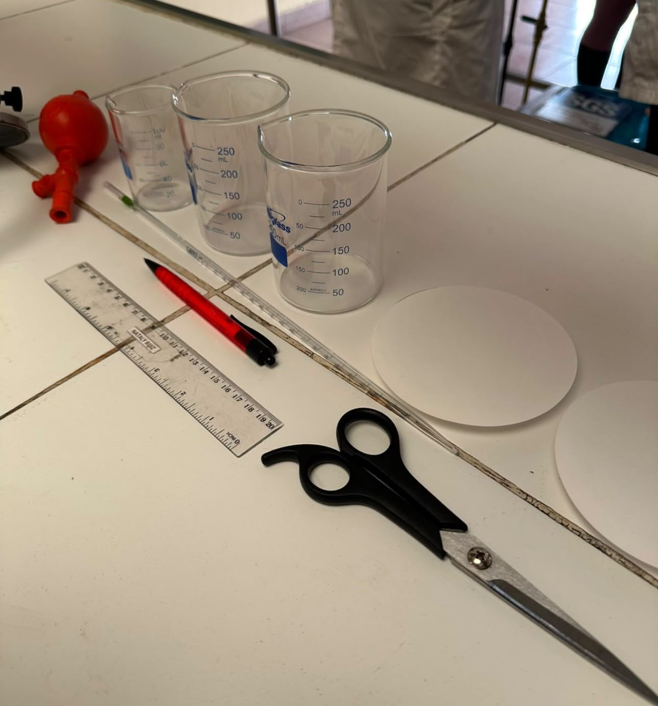
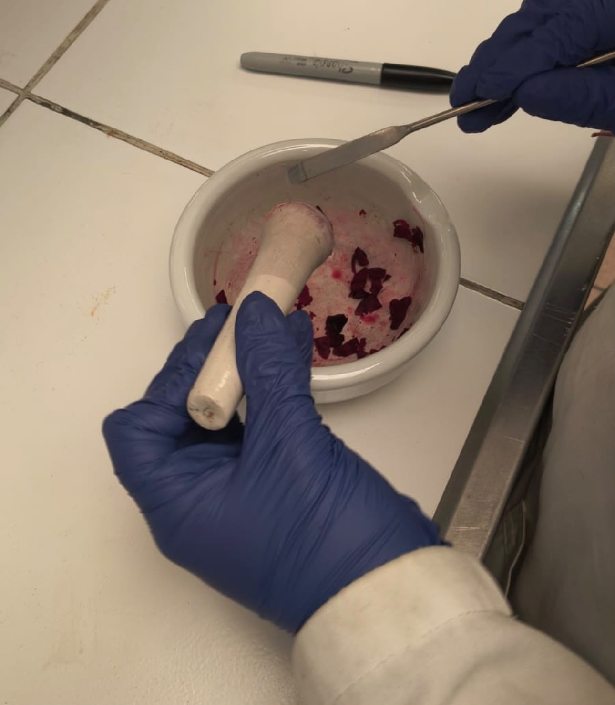
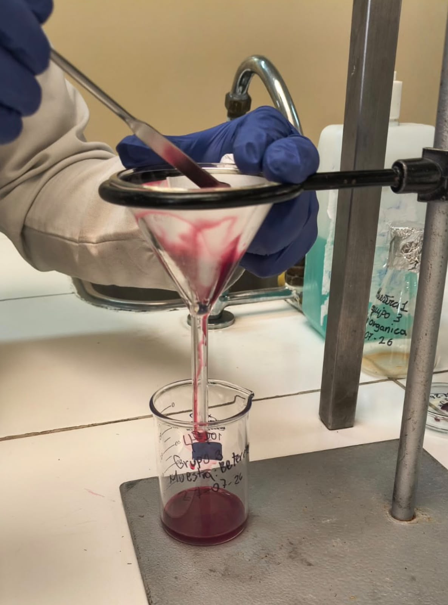
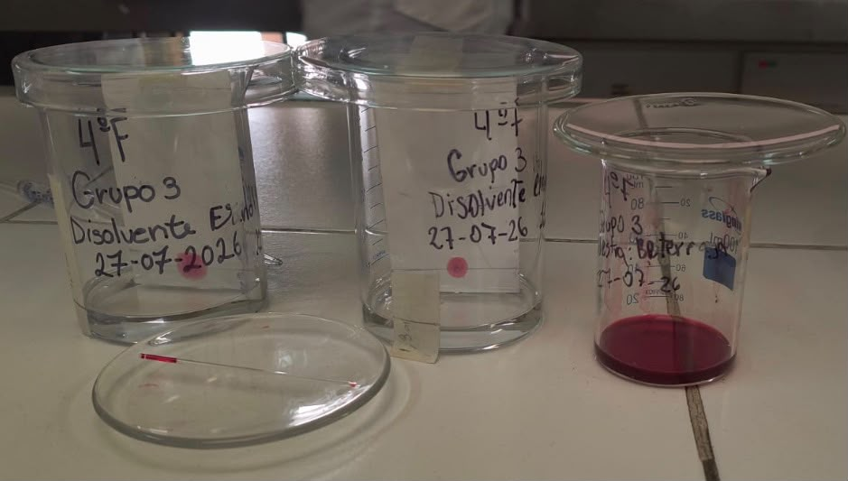
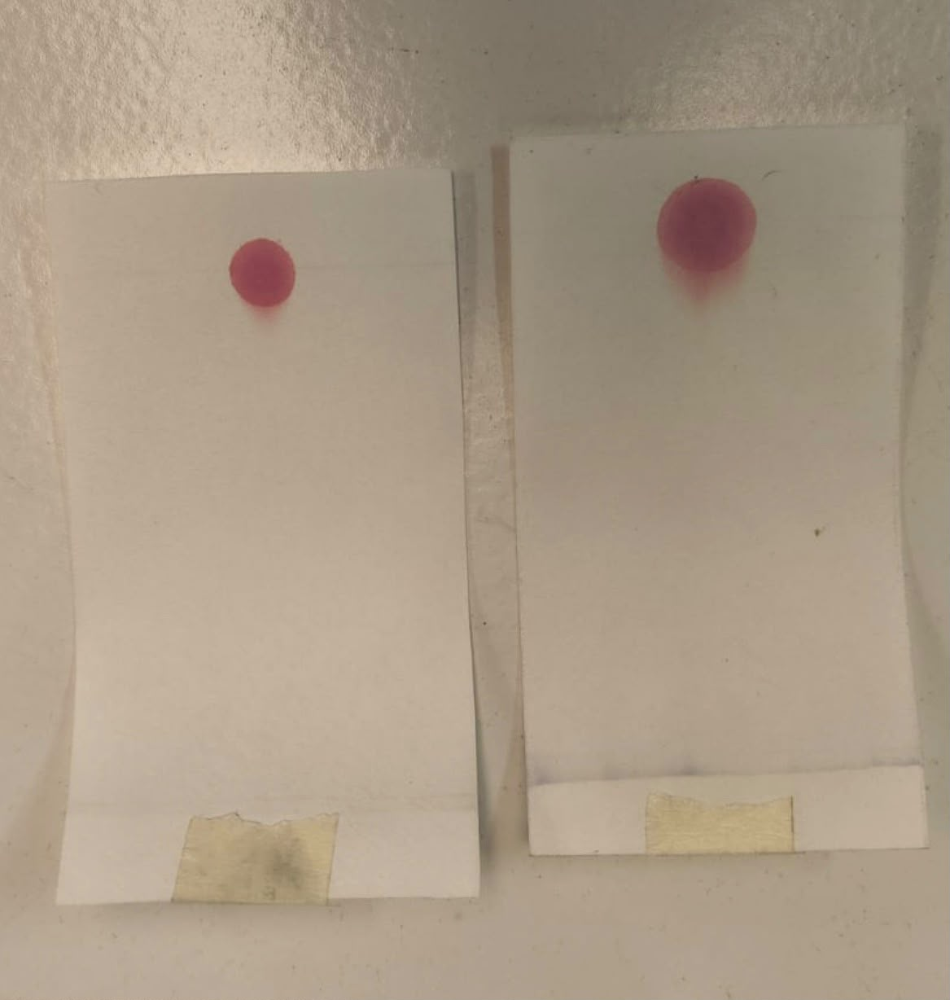

Objetivo
Extraer e identificar el pigmento natural de la betarraga (betanina) mediante cromatografía en papel, aplicando el cálculo del factor de retención (Rf) para caracterizarlo.
Fundamento
La cromatografía separa los componentes de una mezcla gracias a su distinta afinidad entre una fase estacionaria (papel filtro) y una fase móvil (solvente que asciende por capilaridad). Los componentes más afines a la fase móvil recorren mayor distancia, lo que permite separarlos e identificarlos mediante su factor de retención. En este caso, la muestra corresponde al pigmento extraído de la betarraga: la betanina, una betalaína responsable de su color rojo-violáceo característico.

Materiales y equipos
- Papel filtro (fase estacionaria, cortado en tiras)
- Vaso de precipitados (cámara de desarrollo)
- Pipeta y propipeta (para medir y trasvasijar el solvente)
- Regla y lápiz mina (trazar la línea de siembra y medir distancias)
- Tijeras (para cortar las tiras de papel filtro)
- Solvente de desarrollo (fase móvil) y EPP
Procedimiento
Extracción del pigmento:
- Triturar la betarraga en un mortero con pistilo hasta obtener una pasta homogénea.
- Filtrar la muestra triturada con papel filtro y embudo, recolectando el líquido rojo-violáceo (extracto con betanina) en un vaso de precipitados rotulado.
- Preparar los disolventes a utilizar (por ejemplo, etanol), rotulando cada envase con el grupo y la fecha.
Desarrollo cromatográfico:
- Cortar una tira de papel filtro con las tijeras, ajustada al tamaño del vaso de precipitados.
- Trazar con lápiz mina y regla la línea de siembra a 1 cm del borde inferior.
- Sembrar una gota del extracto filtrado de betarraga sobre la línea y dejar secar.
- Con pipeta y propipeta, agregar el solvente al vaso de precipitados sin superar la línea de siembra.
- Colocar la tira de papel dentro del vaso, sin que el solvente toque la siembra.
- Dejar desarrollar hasta que el frente del solvente avance lo suficiente.
- Marcar el frente del solvente y dejar secar.
- Medir las distancias recorridas con la regla y calcular el Rf del pigmento.
Cálculo
Resultados
| Componente | Distancia componente (cm) | Distancia solvente (cm) | Rf |
|---|---|---|---|
| Betanina (ejemplo) | 2,4 | 8,0 | 0,30 |
Guía de trabajo
Documento de contenidos de la cromatografía en papel (módulo T.A.I.):
📄 Contenidos — Cromatografía en papel
Evidencia fotográfica





Conclusión
Se logró extraer el pigmento de la betarraga por trituración y filtración, y sembrarlo en el papel filtro para su desarrollo cromatográfico. El registro del frente de solvente y el cálculo del Rf de la betanina quedan pendientes de la bitácora física para completar el análisis cuantitativo.